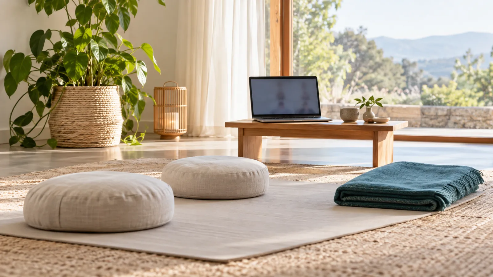
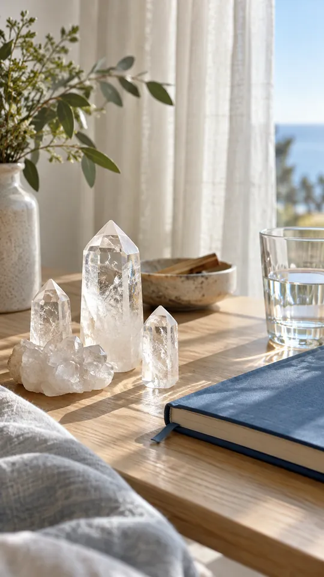
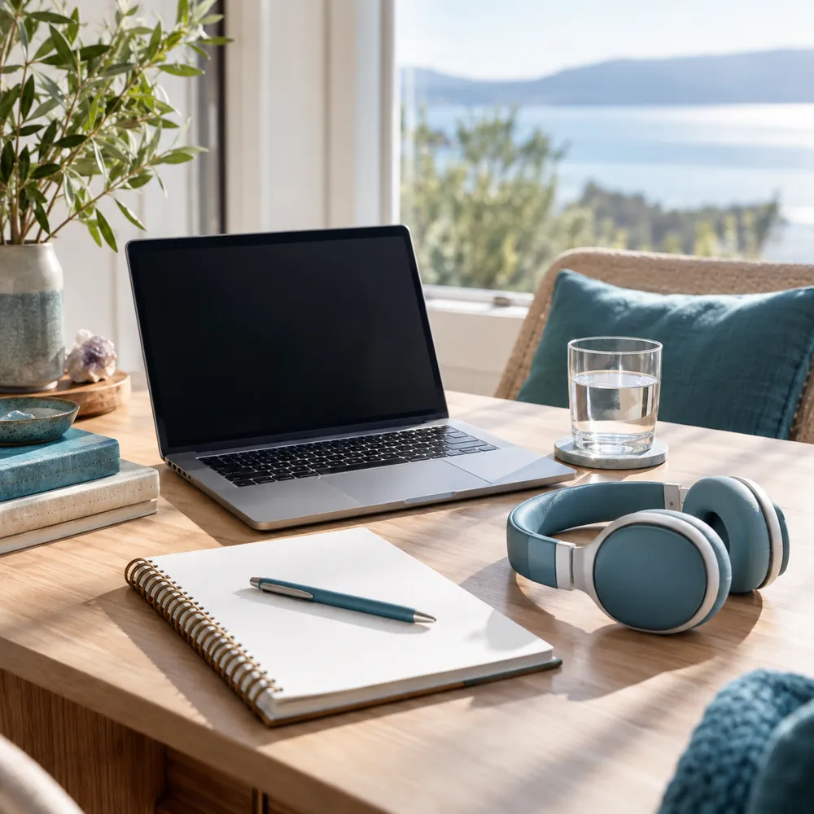

Talleres online · en vivo por Google Meet
Talleres online de cristales lemurianos y respiración consciente
Un espacio para conectar con vos, desde tu casa. Te inscribís acá, pagás con el link y te llega la sala de Meet por WhatsApp.

Talleres abiertos

Quién guía los encuentros
Flavia es terapeuta hace 22 años. En PORTAL de Luz reúne dos prácticas que la acompañan en su camino: el trabajo con los cristales lemurianos y la respiración consciente.
Ahora las comparte online, en vivo por Google Meet, para que puedas sumarte desde cualquier lugar con la misma cercanía de un encuentro en persona.
Preguntas antes de inscribirte
¿Necesito experiencia previa?
No. Los dos talleres están pensados para empezar de cero: en cada encuentro se explica todo paso a paso.
¿Qué necesito para conectarme?
Una computadora o un celular con Google Meet, auriculares y un lugar tranquilo donde nadie te interrumpa durante el encuentro.
¿Tengo que tener cristales para el taller?
Conviene tener al menos un cuarzo. Si no tenés, antes del primer encuentro te orientamos sobre cuál conseguir.
¿Cómo pago y cuándo me llega la sala?
Pagás con el link de pago del taller. Con el pago confirmado, te mandamos por WhatsApp el enlace de Google Meet del encuentro.
¿La respiración consciente es para cualquier persona?
Si estás embarazada o tenés una condición respiratoria o cardíaca, escribinos antes de inscribirte para ver si la práctica es para vos.
Inscripción abierta
Próximo taller: fecha, sala y link de pago
Galería de trabajos
Imágenes ilustrativas

Así es un encuentro por Google Meet
- 01
Elegís la fecha y pagás con el link
Desde la web o por WhatsApp. Con el pago confirmado, tu lugar queda reservado.
- 02
Te llega la sala por WhatsApp
El día anterior te mandamos el enlace de Google Meet y qué tener a mano.
- 03
Te conectás desde tu casa
Ropa cómoda, auriculares y agua cerca. No hace falta experiencia previa.
- 04
Seguís la práctica en tu día
Después de cada encuentro te queda una guía para repetirla cuando la necesites.
Reservá tu lugar en el próximo taller
Escribinos y te contamos fechas, valores y cómo es cada encuentro.
- WhatsApp+54 9 3464 58-1196
- DirecciónA confirmar · Casilda, Santa Fe
- EncuentrosOnline por Google Meet, desde donde estés